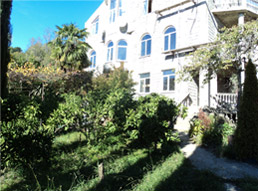

Новость реабилитационного центра Лазурный берег, опубликована 13.01.2011.

Реабилитационный центр Лазурный берег располагает небольшим, но достаточным и квалифицированным штатом специалистов. Многие из специалистов имеют многолетний подобный опыт работы.
Современный подход к лечению наркоманов и алкоголиков выходит далеко за рамки медикаментозного обслуживания. Успешное лечение наркотической зависимости, равно как алкогольной и игровой, невозможно без участия опытных психологов. К сожалению, общественное мнение далеко не всегда с пониманием относится к людям, которым пришлось прибегнуть к помощи наркологической клиники: общество нередко ставит на них клеймо «изгоя», что приводит к новым психологическим срывам и, как следствие - к рецидивам болезни. Именно высококвалифицированные психологи проводят реабилитацию наркозависимых и больных алкоголизмом в комплексе с традиционными медикаментозными методами лечения алкогольной зависимости и наркомании.
К каждому пациенту клиники лечения алкоголизма и наркомании психолог находит свой «ключик».
Лучшие современные методики лечения и последующей реабилитации наркозависимых и алкоголиков успешно применяются в наркологической клинике «Лазурный берег» - «первой ласточкой» за Уралом, добившейся потрясающих успехов в снятии психической и психологической зависимости. Около 3050 пациентов из Иркутска, Красноярска, Владивостока, Челябинска, Екатеринбурга, Омска и Новосибирска получили комплексную квалифицированную помощь в наркологической больнице; подавляющее большинство из них вернулось в общество, к своей семье, к любимой работе. В чем же секрет такого удивительного результата?
Но я не мог ничего поделать, я не знал, как справиться с этим наваждением, которое делало невыносимой мою жизнь и тех, кто еще был со мной, кто молился за меня и верил. Я резал себе вены в исступлении, глотал горы таблеток, все, чтобы не чувствовать боли внутри себя. Я даже хотел повешаться, но мне не хватило мужества, либо мне что - то не давало. Я снова и снова колол, колол, колол героин.